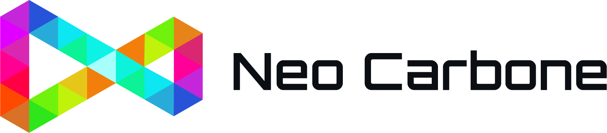
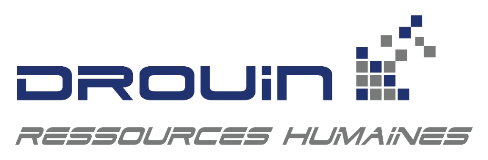

L'IA ne transforme pas les organisations à elle seule. Les humains qui décident de changer, oui.
Un parcours immersif de 4 jours sur 6 semaines où vos équipes repartent avec un vrai outil IA fonctionnel — pas un certificat.


de la génération Gen-Z avoue avoir tenté de saboter les projets IA de leur entreprise.
des pilotes IA échouent à cause de l'écart d'apprentissage des outils et des organisations.
de gain en productivité pour les PME canadiennes qui utilisent l'IA vs celles qui ne l'utilisent pas.
Les hauts-performants IA sont 2.8x plus susceptibles de redessiner leurs workflows.
Le plus grand danger : croire que l'IA remplacera
le besoin de développer les humains.
Les outils IA sont partout.
La capacité à les intégrer, presque nulle part.
Les PME québécoises veulent intégrer l'IA, mais manquent de ressources internes.
Sans équipe IA dédiée, sans budget pour des consultants à temps plein, l'IA reste une promesse théorique.
Les formations traditionnelles créent peu de transformation durable.
Trois jours de théorie, puis retour au quotidien sans qu'aucun outil ne soit construit ni qu'aucun processus ne change.
Les employés terrain comprennent les irritants mieux que les consultants externes.
Quand on leur donne les bons outils et le bon cadre, ils deviennent les meilleurs architectes de la transformation.
Et si une de ces questions
vous parlait?
Cinq inquiétudes qui reviennent dans la tête des dirigeants qu'on accompagne. Une seule « oui » suffit.
Si 1 seule de ces questions est la vôtre, la Résidence IA est conçue pour vous.
Réserver votre place →Chaque participant en sort grandi. Chaque organisation en sort plus productive.
Ce que vos équipes développent. Ce que votre organisation y gagne.
Repartent outillés et grandis.
- Développent une vraie compétence IA
- Apprennent à lire leur travail différemment
- Identifient les irritants et pertes de temps
- Cartographient les opportunités à fort impact
- Conçoivent un outil IA adapté à leur réalité
- Testent et ajustent leur solution
- Présentent leur projet à la direction
- Repartent avec un plan concret de déploiement
Intègrent l'IA sans chaos.
- Mobilisent les équipes plutôt que créer de la résistance
- Réduisent les irritants opérationnels
- Gagnent en efficacité
- Font émerger l'innovation du terrain
- Bâtissent des compétences IA durables à l'interne
- Transforment leurs employés en partenaires du changement
Pas pour remplacer vos employés.
Pour les déployer là où ils créent le plus de valeur.
1 personne traite 40 tickets par jour.
Votre agente support a bâti un assistant qui prépare les réponses aux tickets récurrents.
4 heures chaque vendredi à compiler le rapport hebdo.
Votre superviseur a monté un outil qui compile son rapport hebdo à partir de vos systèmes existants.
2 à 4 heures par proposition.
Votre chargée de comptes a créé un gabarit IA nourri de vos anciennes soumissions.
30 à 45 minutes en début de comité de direction à comparer les chiffres de chacun.
Votre contrôleur a automatisé le briefing chiffré du lundi matin.
Les outils sont construits AVEC les employés, pas imposés AUX employés.
4 phases. 4 jours.
Une transformation sur 6 semaines.
Une approche unique au Québec.
Les formations IA partent des outils et espèrent arriver à l'humain. Nous faisons l'inverse.
Pour soutenir une transformation entière,
à l'intérieur comme à l'extérieur.
Marie-Eve Drouin
Co-fondatrice Neo Carbone · Fondatrice Drouin RH
Gabriel Beaudoin
Neo Carbone
Présentiel. Petit groupe.
Accompagnement serré.
Réservez une cohorte à l'interne pour votre organisation
Un parcours sur mesure, dates flexibles, uniquement avec vos employés. Idéal pour transformer toute une équipe ensemble.
Tout ce qu'on nous demande.
Quatre phases, quatre jours, répartis sur six semaines. Assez court pour tenir dans une vraie année de travail, assez étalé pour que la transformation s'installe pour de bon.
En présentiel, en cohorte multi-entreprises — maximum de 15 participants par cohorte, pour un accompagnement serré et de vraies opportunités de partage entre organisations.
Vous ne repartez pas avec des notes de cours, mais avec un outil IA fonctionnel construit sur vos propres données, et un plan de déploiement sur 90 jours.
Une phase entière est dédiée à l'humain et à la psychologie du changement. Les outils sont co-construits avec les employés plutôt que parachutés d'en haut — ils deviennent les auteurs de la transformation.
Parce qu'on part de vos irritants réels, pas d'un contenu générique. On construit ce qui sert vraiment, on teste en conditions réelles, et on installe l'adoption.
Les organisations qui apprendront à construire avec l'IA
prendront une longueur d'avance en continu.
Neo Carbone porte la technologie. Drouin RH porte les gens. Ensemble, ils portent la transformation.
Parlons de votre prochaine cohorte.
Remplissez le formulaire — nous revenons rapidement pour confirmer le tout et répondre à vos questions.